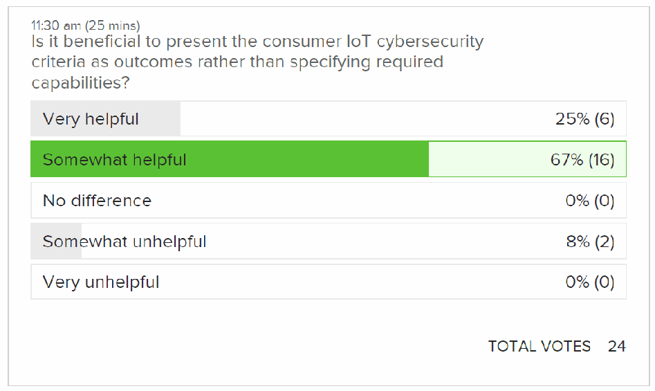
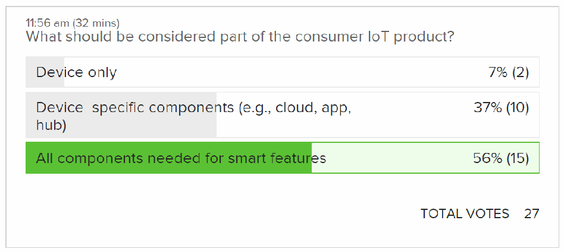
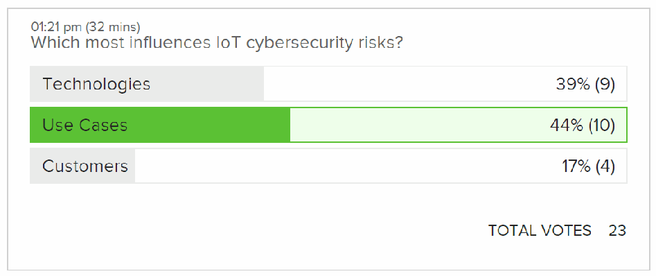
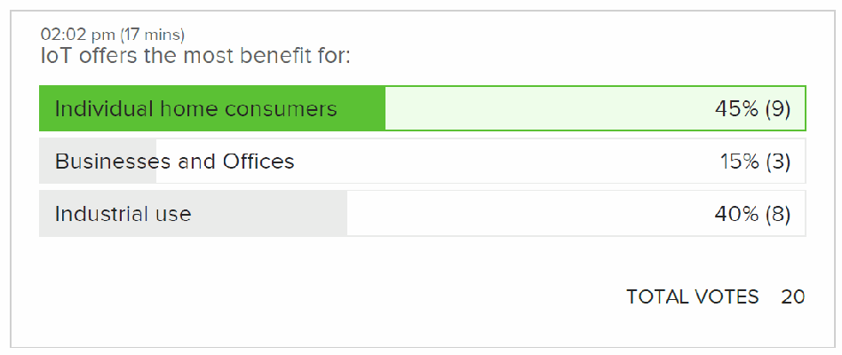
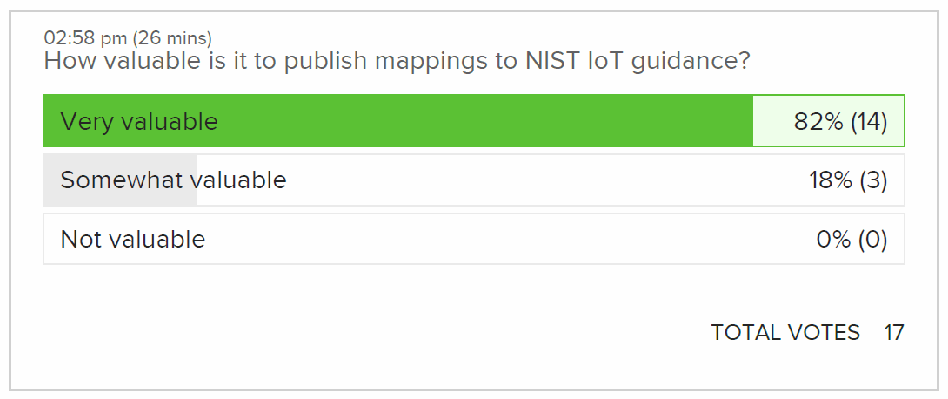
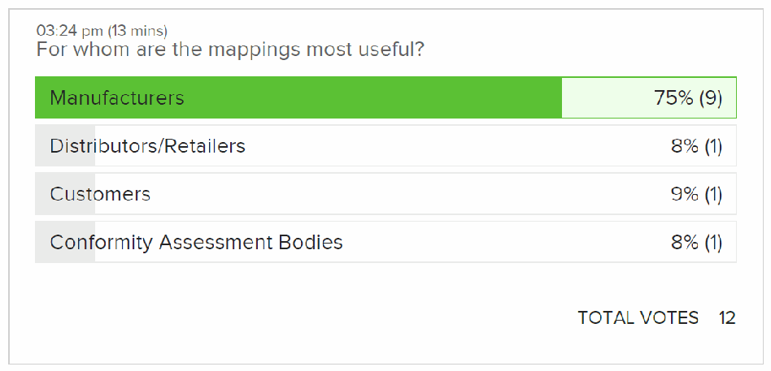
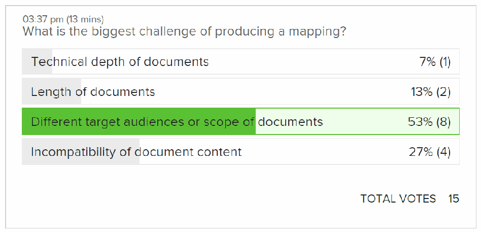

NIST IR 8431 日本語訳
英語タイトル : Workshop Summary Report for “Building on the NIST Foundations: Next Steps in IoT Cybersecurity”日本語タイトル : 「Building on the NIST Foundations：Next Steps in IoT Cybersecurity」ワークショップ概要報告書
公開日 : 2022-09-20
原文URL : https://csrc.nist.gov/pubs/ir/8431/final
翻訳編集 : 自動生成（有志による非公式の日本語訳）, 原文取得日 : 2026-10-31, 訳文 : 208 / 209 ブロック
[要約] NIST IR 8431 は、2022年6月にバーチャル形式で開催されたワークショップで、NIST のモノのインターネット（IoT）サイバーセキュリティプログラムによる IoT 製品のサイバーセキュリティ基準に関する取り組みに寄せられたフィードバックを要約した報告書です。このワークショップの目的は、IoT 製品のサイバーセキュリティに関する具体的な考慮事項と、それらに対処するための手法について、フィードバックを得ることでした。考慮事項は、消費者向け IoT 製品分野や産業用 IoT 分野を含む IoT 製品の各分野に広く適用でき、消費者向け IoT についてはドラフト NIST IR 8425 に基準を反映させる過程で生じたものです。報告書は、ワークショップの概要と主な要点、NIST の IoT サイバーセキュリティプログラムが特定した六つの今後の取り組み、参加者の投票結果を示しています。
NIST Internal Report
NIST Internal Report
NIST IR 8431
NIST IR 8431
Workshop Summary Report for “Building on the NIST Foundations: Next Steps in IoT Cybersecurity”
「Building on the NIST Foundations: Next Steps in IoT Cybersecurity」ワークショップ概要報告書
Katerina N. Megas Michael Fagan Barbara Cuthill Brad Hoehn David Lemire Rebecca Herold
Katerina N. Megas Michael Fagan Barbara Cuthill Brad Hoehn David Lemire Rebecca Herold
This publication is available free of charge from: https://doi.org/10.6028/NIST.IR.8431
本刊行物は、次の場所から無料で入手できます: https://doi.org/10.6028/NIST.IR.8431
NIST Internal Report
NIST Internal Report
NIST IR 8431
NIST IR 8431
Workshop Summary Report for “Building on the NIST Foundations: Next Steps in IoT Cybersecurity”
「Building on the NIST Foundations: Next Steps in IoT Cybersecurity」ワークショップ概要報告書
Katerina N. Megas
Katerina N. Megas
Michael Fagan
Michael Fagan
Barbara Cuthill
Barbara Cuthill
Applied Cybersecurity Division Information Technology Laboratory
応用サイバーセキュリティ部門 情報技術研究所
Brad Hoehn
Brad Hoehn
David Lemire HII Mission Technologies
David Lemire HII Mission Technologies
Rebecca Herold The Privacy Professor
Rebecca Herold The Privacy Professor
This publication is available free of charge from: https://doi.org/10.6028/NIST.IR.8431
本刊行物は、次の場所から無料で入手できます: https://doi.org/10.6028/NIST.IR.8431
September 2022
2022年9月
［米国商務省の紋章。公的な標章のため、この非公式サイトには掲載していません。原本 PDF を参照してください。］
U.S. Department of Commerce Gina M. Raimondo, Secretary
米国商務省 Gina M. Raimondo 長官
National Institute of Standards and Technology
米国国立標準技術研究所（National Institute of Standards and Technology）
Laurie E. Locascio, NIST Director and Under Secretary of Commerce for Standards and Technology
Laurie E. Locascio、NIST 所長兼商務次官（標準・技術担当）
Certain commercial entities, equipment, or materials may be identified in this document in order to describe an experimental procedure or concept adequately. Such identification is not intended to imply recommendation or endorsement by the National Institute of Standards and Technology (NIST), nor is it intended to imply that the entities, materials, or equipment are necessarily the best available for the purpose.
本書では、実験手順や概念を適切に説明するために、特定の商業的な事業体、機器、資材に言及している場合があります。そのような言及は、米国国立標準技術研究所（NIST）による推奨や推薦を意味するものではなく、それらの事業体、資材、機器がその目的に最適であると意味するものでもありません。
There may be references in this publication to other publications currently under development by NIST in accordance with its assigned statutory responsibilities. The information in this publication, including concepts and methodologies, may be used by federal agencies even before the completion of such companion publications. Thus, until each publication is completed, current requirements, guidelines, and procedures, where they exist, remain operative. For planning and transition purposes, federal agencies may wish to closely follow the development of these new publications by NIST.
本刊行物には、NIST が法令で定められた責務に従って策定中の他の刊行物への言及が含まれている場合があります。概念や方法論を含め、本刊行物の情報は、そうした関連刊行物の完成前であっても、連邦機関が利用してかまいません。したがって、各刊行物が完成するまでは、現行の要件、ガイドライン、手順が存在する場合は、引き続き有効です。計画および移行のため、連邦機関は、NIST によるこれらの新しい刊行物の策定状況を注意深く追うことを検討してもよいです。
Organizations are encouraged to review all draft publications during public comment periods and provide feedback to NIST. Many NIST cybersecurity publications, other than the ones noted above, are available at https://csrc.nist.gov/publications.
各組織は、パブリックコメントの期間中にすべてのドラフト刊行物を確認し、NIST にフィードバックを提供することが推奨されます。上記以外の NIST のサイバーセキュリティ関連刊行物の多くは、https://csrc.nist.gov/publications で入手できます。
NIST Technical Series Policies
NIST Technical Series の方針
Copyright, Fair Use, and Licensing Statements
著作権、フェアユース、ライセンスに関する声明
NIST Technical Series Publication Identifier Syntax
NIST Technical Series 刊行物の識別子の構文
Publication History
刊行の経緯
Approved by the NIST Editorial Review Board on 2022-09-08
2022年9月8日に NIST 編集審査委員会（NIST Editorial Review Board）が承認
How to Cite this NIST Technical Series Publication:
本 NIST Technical Series 刊行物の引用方法:
Megas KN, Fagan M, Cuthill B, Hoehn B, Lemire D, Herold R (2022) Workshop Summary Report for “Building on the NIST Foundations: Next Steps in IoT Cybersecurity”. (National Institute of Standards and Technology, Gaithersburg, MD), NIST Interagency or Internal Report (IR) NIST IR 8431. https://doi.org/10.6028/NIST.IR.8431
Megas KN, Fagan M, Cuthill B, Hoehn B, Lemire D, Herold R (2022) Workshop Summary Report for “Building on the NIST Foundations: Next Steps in IoT Cybersecurity”. (National Institute of Standards and Technology, Gaithersburg, MD), NIST Interagency or Internal Report (IR) NIST IR 8431. https://doi.org/10.6028/NIST.IR.8431
Author ORCID iDs
著者の ORCID iD
Katerina Megas: 0000-0002-2815-5448
Katerina Megas: 0000-0002-2815-5448
Michael Fagan: 0000-0002-1861-2609
Michael Fagan: 0000-0002-1861-2609
Barbara Cuthill: 0000-0002-2588-6165
Barbara Cuthill: 0000-0002-2588-6165
Contact Information
連絡先
iotsecurity@nist.gov
iotsecurity@nist.gov
National Institute of Standards and Technology Attn: Applied Cybersecurity Division, Information Technology Laboratory 100 Bureau Drive (Mail Stop 2000) Gaithersburg, MD 20899-2000
National Institute of Standards and Technology Attn: Applied Cybersecurity Division, Information Technology Laboratory 100 Bureau Drive (Mail Stop 2000) Gaithersburg, MD 20899-2000
All comments are subject to release under the Freedom of Information Act (FOIA).
すべてのコメントは、情報自由法（FOIA）に基づく公開の対象です。
Reports on Computer Systems Technology
コンピュータシステム技術に関する報告書
The Information Technology Laboratory (ITL) at the National Institute of Standards and Technology (NIST) promotes the U.S. economy and public welfare by providing technical leadership for the Nation’s measurement and standards infrastructure. ITL develops tests, test methods, reference data, proof of concept implementations, and technical analyses to advance the development and productive use of information technology. ITL’s responsibilities include the development of management, administrative, technical, and physical standards and guidelines for the cost-effective security and privacy of other than national security-related information in federal information systems.
米国国立標準技術研究所（NIST）の情報技術研究所（ITL）は、国の測定・標準インフラストラクチャに技術的なリーダーシップを提供することにより、米国の経済と公共の福祉を促進しています。ITL は、情報技術の発展と生産的な利用を推進するため、テスト、テスト方法、参照データ、概念実証の実装、技術分析を開発しています。ITL の責務には、連邦情報システムにおける国家安全保障関連以外の情報について、費用対効果の高いセキュリティおよびプライバシーを確保するための、管理上、行政上、技術上、物理上の標準およびガイドラインの策定が含まれます。
Abstract
概要
This report summarizes the feedback received on the work of the NIST Cybersecurity for the Internet of Things (IoT) program on IoT product cybersecurity criteria at a virtual workshop in June 2022. The purpose of this workshop was to obtain feedback on specific considerations— and techniques for addressing those considerations—around cybersecurity in IoT products. These considerations have broad applicability across IoT product sectors, including the consumer IoT products sector and the industrial IoT sector. For consumer IoT, these considerations arose in moving the criteria presented in Recommended Criteria for Cybersecurity Labeling for Consumer Internet of Things (IoT) Products into draft NIST IR 8425, Profile of the IoT Core Baseline for Consumer IoT Products, along with a discussion paper on the complexity of risk identification for IoT published before the workshop.
本報告書は、2022年6月にバーチャル形式で開催されたワークショップで寄せられた、NIST のモノのインターネット（IoT）サイバーセキュリティプログラムによる IoT 製品のサイバーセキュリティ基準策定の取り組みへのフィードバックを要約したものです。このワークショップの目的は、IoT 製品のサイバーセキュリティに関する具体的な考慮事項と、それらの考慮事項に対処するための手法について、フィードバックを得ることでした。これらの考慮事項は、消費者向け IoT 製品分野や産業用 IoT 分野を含め、IoT 製品の各分野に広く適用できます。消費者向け IoT については、これらの考慮事項は、Recommended Criteria for Cybersecurity Labeling for Consumer Internet of Things (IoT) Products で示された基準をドラフト NIST IR 8425, Profile of the IoT Core Baseline for Consumer IoT Products に反映させる過程で生じたものであり、ワークショップ前に公表された、IoT のリスク識別の複雑さに関するディスカッションペーパーとあわせて取り上げられました。
Keywords
キーワード
Consumer IoT; Industrial IoT (IIoT); consumer profile; cybersecurity; Internet of Things (IoT); IoT products; privacy; Risk Management Framework; securable products; security requirements.
消費者向け IoT、産業用 IoT（IIoT）、消費者向けプロファイル、サイバーセキュリティ、モノのインターネット（IoT）、IoT 製品、プライバシー、リスクマネジメントフレームワーク、セキュリティ保護可能な製品、セキュリティ要件。
Audience
想定読者
The main audiences for this publication are product security officers and security architects at IoT product manufacturers and those in their supply chain; cybersecurity test and evaluation experts; and other stakeholders in the IoT product market. This publication may also help customers or integrators of IoT products who are adopting IoT technologies in their residence or business, especially small business networks, as well as organizations concerned with conformity assessment of IoT products to published guidance.
本刊行物の主な想定読者は、IoT 製品の製造者およびそのサプライチェーンに属する者の製品セキュリティ責任者とセキュリティアーキテクト、サイバーセキュリティのテスト・評価の専門家、ならびに IoT 製品市場のその他の利害関係者です。また、自宅や事業所（特に小規模事業者のネットワーク）に IoT 技術を導入する、IoT 製品の顧客やインテグレーター、および公表されたガイダンスへの IoT 製品の適合性評価に関心を持つ組織にも、役立つ場合があります。
Table of Contents
目次
List of Tables
表の一覧
1. Introduction
1. はじめに
On June 22, 2022, the National Institute of Standards and Technology (NIST) conducted a virtual workshop entitled Building on the NIST Foundations: Next Steps in IoT Cybersecurity. [1] The event included stakeholders from across government, industry, international bodies, and academia. The goal was to review recent work by the Cybersecurity for the Internet of Things (IoT) program [2] in defining cybersecurity requirements for consumer IoT products and gather feedback to aid the program in defining next steps. Over 170 people participated from the U.S. and 19 other countries, representing a broad mix of government, industry, and academia.
2022年6月22日、米国国立標準技術研究所（NIST）は、Building on the NIST Foundations: Next Steps in IoT Cybersecurity と題するバーチャル形式のワークショップを開催しました [1]。このイベントには、政府、産業界、国際機関、学界のさまざまな利害関係者が参加しました。目的は、消費者向け IoT 製品のサイバーセキュリティ要件を定義する、モノのインターネット（IoT）サイバーセキュリティプログラム [2] の最近の取り組みを振り返り、プログラムが今後の取り組みを定めるのに役立つフィードバックを集めることでした。米国および他の 19 か国から 170 人を超える人々が参加し、政府、産業界、学界の幅広い関係者を代表していました。
1.1. About the NIST Cybersecurity for IoT Program
1.1. NIST の IoT サイバーセキュリティプログラムについて
The mission of the NIST Cybersecurity for IoT program is to cultivate trust in IoT and foster an environment that enables innovation on a global scale through standards, guidance, and related tools. The program supports the development and application of these standards, guidelines, and tools to improve the cybersecurity of connected products and the environments in which they are deployed. By collaborating with stakeholders across government, industry, consumer advocacy groups, international bodies, and academia, the program aims to fulfill this mission and foster an environment that sparks innovation on a global scale.
NIST の IoT サイバーセキュリティプログラムの使命は、標準、ガイダンス、関連ツールを通じて、IoT への信頼を醸成し、世界規模でのイノベーションを可能にする環境を育むことです。プログラムは、接続された製品およびそれらが配備される環境のサイバーセキュリティを向上させるために、これらの標準、ガイドライン、ツールの策定と適用を支援します。政府、産業界、消費者擁護団体、国際機関、学界の利害関係者と協力することで、プログラムはこの使命を果たし、世界規模でイノベーションを促す環境を育むことを目指しています。
1.2. About the Next Steps in IoT Cybersecurity Workshop
1.2. Next Steps in IoT Cybersecurity ワークショップについて
In response to Executive Order (EO) 14028 on Improving the Nation’s Cybersecurity [3], NIST developed a set of cybersecurity criteria for consumer IoT products. These criteria were published in February 2022 along with discussions of considerations for product cybersecurity labels and associated conformity assessment needs as Recommended Criteria for Cybersecurity Labeling for Consumer Internet of Things (IoT) Products [4]. NIST received feedback on the criteria during the subsequent pilot program phase called for in the E.O.
国家のサイバーセキュリティの改善に関する大統領令（EO）14028 [3] を受けて、NIST は、消費者向け IoT 製品のサイバーセキュリティ基準一式を策定しました。この基準は、製品のサイバーセキュリティラベルと関連する適合性評価の必要性に関する考慮事項の検討とあわせて、2022年2月に Recommended Criteria for Cybersecurity Labeling for Consumer Internet of Things (IoT) Products [4] として公表されました。NIST は、大統領令で求められたその後のパイロットプログラムの段階で、この基準に対するフィードバックを受けました。
In June 2022, NIST released two new documents:
2022年6月、NIST は二つの新しい文書を公表しました。
•Profile of the IoT Core Baseline for Consumer IoT Products (NIST IR 8425 [DRAFT]) [5], and
•Profile of the IoT Core Baseline for Consumer IoT Products (NIST IR 8425 [DRAFT]) [5]、および
•Ideas for the Future of IoT Cybersecurity at NIST: IoT Risk Identification Complexity [6]
•Ideas for the Future of IoT Cybersecurity at NIST: IoT Risk Identification Complexity [6]
The goal of the June 22 workshop was to discuss the concepts in the recent draft documents and gather stakeholder feedback to assist the Cybersecurity for IoT program in defining next steps.
6月22日のワークショップの目的は、最近のドラフト文書にある概念を議論し、IoT サイバーセキュリティプログラムが今後の取り組みを定めるのに役立つ、利害関係者からのフィードバックを集めることでした。
The workshop agenda together is presented in Table 1. The agenda, short biographies of the keynote speakers, and the recording of the workshop are available on the NIST event information page [1].
ワークショップ全体のアジェンダを表 1 に示します。アジェンダ、基調講演者の略歴、ワークショップの録画は、NIST のイベント情報ページ [1] で入手できます。
Table 1. Workshop Agenda
表 1. ワークショップのアジェンダ
| Time | Activity and Presenters |
|---|---|
| 10:00 - 10:15am | Welcome and Introduction
|
| 10:15am - 10:45pm | Keynote: David Barzilai, Karamba Security, VP Sales & Marketing, Chairman and Co-Founder |
| 10:45 - 11:15am | Keynote: Jasyn Voshell, Zebra Technologies, Director Products and Solutions Security |
| 11:15am - 12:30pm | Panel 1: What’s next for the consumer IoT baseline: Considerations we heard for the Consumer IoT cybersecurity criteria.
|
| 1:00 - 2:30pm | Panel 2: Product cybersecurity strategy: How do cybersecurity requirements fit into IoT product development
|
| 2:45 - 3:45pm | Panel 3: The S in NIST: Using standards to support product cybersecurity outcomes
|
| 3:45 - 4:00pm | Wrap Up and Next Steps Speaker(s) Kat Megas, NIST |
| 時間 | 内容と発表者 |
|---|---|
| 10:00 - 10:15am | 歓迎の挨拶と紹介
|
| 10:15am - 10:45pm | 基調講演: David Barzilai, Karamba Security, 営業・マーケティング担当副社長、会長兼共同創業者 |
| 10:45 - 11:15am | 基調講演: Jasyn Voshell, Zebra Technologies, 製品およびソリューションセキュリティ担当ディレクター |
| 11:15am - 12:30pm | パネル 1: 消費者向け IoT ベースラインの次の展開: 消費者向け IoT サイバーセキュリティ基準に関して寄せられた考慮事項
|
| 1:00 - 2:30pm | パネル 2: 製品のサイバーセキュリティ戦略: サイバーセキュリティ要件は IoT 製品開発にどのように組み込まれるか
|
| 2:45 - 3:45pm | パネル 3: NIST の S: 標準を用いて製品のサイバーセキュリティの成果を支援する
|
| 3:45 - 4:00pm | まとめと次のステップ 発表者 Kat Megas, NIST |
The workshop drew over 170 participants, panelists, speakers, and moderators. This included representatives from:
ワークショップには、参加者、パネリスト、講演者、司会者を合わせて 170 人を超える人々が集まりました。参加者には、次の組織の代表者が含まれていました。
•A mixture of government, industry, and academia, as well as researchers, consumer organizations, and the press
•政府、産業界、学界の混成に加え、研究者、消費者団体、報道機関
•A range of federal government organizations including civil government and defense
•文民機関と国防機関を含む、連邦政府のさまざまな組織
•20 countries, including 2 foreign governments
•20 か国（うち 2 か国は外国政府）
•At least 2 U.S. state governments
•少なくとも 2 つの米国州政府
In addition to the ability for participants to submit questions, the workshop included a series of seven polls as a mechanism to gather participants’ feedback and influence the panel discussions. The poll questions and poll results are presented in Appendix A. Since workshop survey group participants and poll responses were entirely voluntary, poll results should not be viewed as providing statistically valid sample size results for their questions.
参加者が質問を提出できたことに加え、ワークショップでは、参加者のフィードバックを集め、パネルディスカッションに反映させる仕組みとして、7 件の一連の投票を実施しました。投票の質問と結果は付録 A に示します。ワークショップ調査のグループ参加者と投票への回答は、いずれも完全に任意であったため、投票結果を各質問について統計的に有効な標本数を示すものとみなすべきではありません。
Videos of each workshop segment are available on the event web page [1]. Based on the participant presentations and feedback collected from stakeholders, this report provides a summary of key points and a general discussion of possible follow-on activities for the program.
ワークショップの各セグメントの動画は、イベントのウェブページ [1] で入手できます。本報告書は、参加者の発表と利害関係者から集めたフィードバックに基づいて、要点の要約と、プログラムの今後の活動の可能性に関する全般的な議論を示します。
2. Summary and Key Takeaways
2. 概要と主な要点
This section summarizes the keynote presentations and describes a set of takeaways developed from the keynote contents and the panel discussions.
本章では、基調講演を要約し、基調講演の内容とパネルディスカッションから導かれた要点をまとめます。
2.1. Keynote: David Barzilai, Karamba Security
2.1. 基調講演: David Barzilai、Karamba Security
The first keynote was by David Barzilai, VP Sales & Marketing and Co-Founder, Karamba Security, which conducted a survey of Chief Product Security Officers (CPSOs), and their equivalents, to better understand the challenges of this role. David described the role of a CPSO and the challenges they face, especially when dealing with research and development (R&D) teams seeking to balance functionality and security in their products. He cited brand protection through maintaining consumer trust, customer service-level agreement (SLA) requirements, and regulatory compliance as the principal drivers for the creation of the CPSO role. David described a three-fold approach to improve product security and trustworthiness using standards and certifications, which he described as the “CPSO’s best friends”; tools (such as binary analysis for supply-chain security, and vulnerability management systems); and best practices (establishing the manufacturers as being responsible for and monitoring product security). He also identified the reliance on “massive” supply chains as a huge challenge for addressing product security, noting that it is very hard for manufacturers to impose security best practices on their suppliers. He explained that using software bills of materials (SBOMs) would be very beneficial for creating transparency throughout the supply chain and allow manufacturers to more effectively monitor and address IoT product security risks.
最初の基調講演は、Karamba Security の VP Sales & Marketing 兼共同創業者である David Barzilai が行いました。同社は、最高製品セキュリティ責任者（CPSO）およびそれに相当する役職の人々を対象に調査を実施し、この役割の課題をより深く理解しようとしました。David は、CPSO の役割と、CPSO が直面する課題について説明しました。特に、製品の機能性とセキュリティのバランスを取ろうとする研究開発（R&D）チームと向き合う際の課題です。彼は、消費者の信頼を維持することによるブランドの保護、顧客のサービスレベル契約（SLA）の要件、規制への準拠を、CPSO という役割が設けられる主な推進要因として挙げました。David は、製品のセキュリティと信頼性を高める三つの取り組みを説明しました。すなわち、「CPSO の最良の友」と彼が呼ぶ標準と認証、ツール（サプライチェーンのセキュリティのためのバイナリ解析や脆弱性管理システムなど）、そしてベストプラクティス（製造者が製品セキュリティに責任を負い、それを監視する体制を確立すること）です。また、「大規模な」サプライチェーンへの依存が、製品セキュリティに対処するうえでの大きな課題であることも指摘し、製造者がサプライヤーにセキュリティのベストプラクティスを課すのは非常に難しいと述べました。彼は、ソフトウェア部品表（SBOM）を使用すれば、サプライチェーン全体の透明性を高めるうえで非常に有益であり、製造者が IoT 製品のセキュリティリスクをより効果的に監視し、対処できるようになると説明しました。
David presented the automotive industry as driving “radical change” in the area of product security, creating a life cycle framework with mandatory processes. Failure to comply with these processes and address cybersecurity deficiencies means the resulting products cannot be sold. In that industry, the original equipment manufacturer (OEM) is ultimately responsible for the final product and able to allocate security requirements down to their suppliers. The supplier product security teams are empowered to do what is needed to meet the OEM’s security requirements. The OEM must be able to demonstrate to regulators that cybersecurity requirements have been met throughout the supply chain and must address critical security and safety issues prior to moving vehicles to production. David pointed out that putting the manufacturers in control of the supply chain and making the manufacturer ultimately responsible for the security of the products, helped to ensure product security and safety, in this case for vehicles. However, he described how this could also be a way to drive change and improve security and safety for IoT products as well.
David は、自動車業界が製品セキュリティの分野で「抜本的な変化」を推進しており、必須のプロセスを備えたライフサイクルの枠組みを作り出していると紹介しました。これらのプロセスに従わず、サイバーセキュリティ上の不備に対処しなければ、その製品は販売できません。この業界では、相手先ブランド製造業者（OEM）が最終製品に対して最終的な責任を負っており、セキュリティ要件をサプライヤーに割り当てることができます。サプライヤーの製品セキュリティチームは、OEM のセキュリティ要件を満たすために必要なことを行う権限を与えられています。OEM は、サプライチェーン全体でサイバーセキュリティ要件が満たされていることを規制当局に示せなければならず、車両を量産に移す前に、重大なセキュリティ上および安全上の問題に対処しなければなりません。David は、製造者がサプライチェーンを管理し、製品のセキュリティに最終的な責任を負うようにしたことが、この場合は車両において、製品のセキュリティと安全の確保に役立ったと指摘しました。しかし、これは IoT 製品についても、変化を促し、セキュリティと安全を向上させる方法になりうると述べました。
2.2. Keynote: Jasyn Voshell, Zebra Technologies
2.2. 基調講演: Jasyn Voshell、Zebra Technologies
Jasyn Voshell, Director Product and Solutions Security at Zebra Technologies, provided the second keynote. Jasyn described Zebra as providing a diverse line of IoT and IT products, including mobile products, for a range of industries, and explained that his role is to guide the cybersecurity efforts of development teams across Zebra business units.
2 つ目の基調講演は、Zebra Technologies の Director Product and Solutions Security である Jasyn Voshell が行いました。Jasyn は、Zebra がモバイル製品を含む多様な IoT 製品および IT 製品群をさまざまな業界に提供していると説明し、自身の役割は、Zebra の各事業部門の開発チームによるサイバーセキュリティの取り組みを導くことだと述べました。
Jasyn briefly summarized the threat landscape and some recent high-profile events as motivating factors for OEMs to consider product security. He then described in detail Zebra’s approach, based on three principles:
Jasyn は、OEM が製品セキュリティを検討する動機となる要因として、脅威の状況と最近の注目を集めた出来事を簡潔にまとめました。続いて、Zebra の取り組みを、三つの原則に基づくものとして詳しく説明しました。
•“Secure by Design”: Uses Secure Code Storage; Secure Code Training (e.g., training starting on day one, and regularly ongoing); Secure Code Scanning (e.g., tracking vulnerabilities, hard-coded secrets, code leaks and binaries); Policy/Framework (e.g., using System Development Lifecycle (SDLC), Open Web Application Security Project(OWASP), NIST); Industry Maturity Model (using the Software Assurance Maturity Model (SAMM)); Application Lifecycle Management/Product Lifecycle Management (ALM/PLM) Integration into Development Model (using Quality Service Model Operating System (SMOS));
•「Secure by Design」: Secure Code Storage、Secure Code Training（たとえば、初日から始まる定期的な継続トレーニング）、Secure Code Scanning（たとえば、脆弱性、ハードコードされたシークレット、コードの漏えい、バイナリの追跡）、ポリシー／フレームワーク（たとえば、システム開発ライフサイクル（SDLC）、Open Web Application Security Project（OWASP）、NIST の利用）、業界の成熟度モデル（Software Assurance Maturity Model（SAMM）の利用）、アプリケーションライフサイクル管理／製品ライフサイクル管理（ALM/PLM）の開発モデルへの統合（Quality Service Model Operating System（SMOS）の利用）を用います。
•“Secure in Use”: Employs mechanisms such as participating in the Bug90 program, penetration testing, and tracking metrics; and
•「Secure in Use」: Bug90 プログラムへの参加、ペネトレーションテスト、メトリクスの追跡などの仕組みを採用します。
•“Secure Thru Trust”: Seeks to build connections with customers including a broad range of organizational partnerships, direct customer engagements, and the use of media to disseminate information about Zebra product security.
•「Secure Thru Trust」: 幅広い組織間のパートナーシップ、顧客との直接の関与、Zebra の製品セキュリティに関する情報を広めるためのメディアの利用など、顧客とのつながりを築くことを目指します。
For each of the “Secure by Design” guidelines, Jasyn provided details about the associated activities, describing the guiding principle, as well as the goal, measures of success, and business benefits that mechanism provides. He explained that the overall goal is to design security into all products, which Zebra views as a competitive advantage.
Jasyn は、「Secure by Design」の各ガイドラインについて、関連する活動の詳細を示し、指針となる原則に加えて、その仕組みがもたらす目標、成功の尺度、ビジネス上の利益を説明しました。彼は、全体の目標はすべての製品にセキュリティを設計の段階から組み込むことであり、Zebra はこれを競争上の優位性とみなしていると説明しました。
Jasyn also described the relationship of a CPSO to a Chief Information Security Officer (CISO), explaining that while the roles are related and coordination between them is beneficial, their respective domains (product security for a CPSO, versus security of business operations for the CISO) are well defined and there is very little ambiguity about responsibilities.
Jasyn はまた、CPSO と最高情報セキュリティ責任者（CISO）との関係についても説明しました。二つの役割は関連しており、両者の連携は有益であるものの、それぞれの領域（CPSO は製品セキュリティ、CISO は事業運営のセキュリティ）は明確に定められており、責任の所在にあいまいさはほとんどないと述べました。
2.3. Key Takeaways
2.3. 主な要点
The following takeaways are the ideas, observations, and suggestions that NIST heard from workshop participants, and which received significant support from attendees and/or panelists. This workshop was not a forum for developing consensus; rather, the takeaways represent recurrent themes that emerged over the course of the event—not formal positions taken by attendees or participants. While this document seeks to summarize discussions and viewpoints expressed by panelists and participants, it cannot capture every thought, opinion, and suggestion provided during the sessions. The supporting quotes and discussion for each takeaway are drawn from across all three panels. The major discussion points of the day are presented in terms of the takeaways that cut across panels. The takeaways do not represent specific recommendations or guidance; rather, they provide important feedback to the program, and serve as a basis for future conversations with the community.
以下の要点は、NIST がワークショップ参加者から聞き、出席者および／またはパネリストから大きな支持を得た考え、所見、提案です。このワークショップは合意形成の場ではありませんでした。要点は、イベントを通じて繰り返し現れたテーマを表すものであり、出席者や参加者が表明した正式な立場ではありません。本書は、パネリストと参加者が表明した議論や見解を要約しようとするものですが、セッション中に示されたすべての考え、意見、提案を網羅できるわけではありません。各要点を裏付ける引用と議論は、三つのパネルすべてから採られています。当日の主な論点は、複数のパネルに共通する要点に沿って示します。要点は特定の推奨事項やガイダンスを表すものではなく、プログラムへの重要なフィードバックとなり、コミュニティとの今後の対話の基礎となります。
Takeaway 1: The role of CPSO is becoming more prominent and important as manufacturers see the need to comply with various emerging requirements, and not be seen as lacking security. The CPSO and CISO roles are complementary and should have clear delineations of responsibility.
要点 1: 製造者が、新たに生じるさまざまな要件に準拠する必要性を認識し、セキュリティが不十分とみなされることを避けたいと考えるにつれて、CPSO の役割はより目立つ重要なものになりつつあります。CPSO と CISO の役割は補完的であり、責任の線引きを明確にすべきです。
The workshop began with the keynote speakers’ observations on this emerging role within organizations to bridge the divide between cybersecurity requirements and product development. Jasyn Voshell, Zebra Technologies, described that having a director of products and solutions security has led to more direction, more use of industry standards and more operational controls with more consistency across different development teams.
ワークショップは、サイバーセキュリティ要件と製品開発の間の隔たりを埋める、組織内でのこの新たな役割についての、基調講演者の所見から始まりました。Zebra Technologies の Jasyn Voshell は、製品およびソリューションのセキュリティ担当ディレクターを置いたことで、方向性がより明確になり、業界標準の利用が増え、異なる開発チームの間で、より一貫した運用上の管理策が実施されるようになったと説明しました。
When prompted by a participant question on whether all IoT companies need a CPSO, speaker David Barzilai, Karamba Security, indicated that would not always be the case. He suggested that in the case of OEMs focusing on “low-security-awareness markets” or markets where attacks might not necessarily be an issue, the OEM could make a risk-based decision to allocate an architect from R&D who could serve in the CPSO capacity to assure the product security posture.
すべての IoT 企業に CPSO が必要かという参加者の質問に対し、講演者の Karamba Security の David Barzilai は、必ずしもそうとは限らないと述べました。彼は、「セキュリティ意識の低い市場」や、攻撃が必ずしも問題にならない市場に注力する OEM の場合、OEM はリスクに基づく判断として、R&D 部門のアーキテクトを一人割り当て、その人物が CPSO の役割を担って製品のセキュリティ態勢を保証することができると提案しました。
Takeaway 2: A growing number of OEMs are moving to a model of maintaining contact with purchased and deployed products and taking greater responsibility for monitoring and maintaining the product in operation.
要点 2: 購入され配備された製品との接点を維持し、運用中の製品の監視と保守により大きな責任を負うモデルへ移行する OEM が、増えています。
In the second panel, David Elfering provided insights and perspectives from the viewpoint of an IoT product consumer, based upon his long tenure as the VP and CISO at one of the largest transportation and logistics corporations in the U.S. Over the last 25 years, since telematics were introduced, vehicles have become more complex, with their embedded equipment components and related equipment supply chains correspondingly becoming more complex. David pointed out that CISOs at large transportation organizations with smart vehicle fleets are expected to secure the full fleets, including the apps, clouds, and supply chain components where they often have no information and little to no control. He pointed out that such organizations, and all other types of organizations using IoT products in other industries, view these smart vehicles and equipment as products, and the organizations “are consumers like everyone else, even though we have massive amounts of complexity on top [of the traditional vehicle components]”. More complexity, with more IoT products incorporated, also brought people together from more diverse areas from within the organization and from outside contracted vendors, to solve the expectations of the business’s needs. As a result, this led to more pressure on OEMs to work with organizations throughout the supply chain to understand what is in the technology stack when issues arise. This is especially necessary to meet the new expectations of fast deliveries.
2 つ目のパネルでは、David Elfering が、米国最大級の輸送・物流企業の一つで VP 兼 CISO を長く務めた経験に基づき、IoT 製品の消費者の観点から見識と考えを提供しました。テレマティクスが導入されてからの過去 25 年間で、車両はより複雑になり、搭載機器の構成要素と関連する機器のサプライチェーンもそれに応じて複雑になっています。David は、スマート車両群を持つ大規模な輸送組織の CISO には、アプリ、クラウド、サプライチェーンの構成要素など、情報がほとんどなく、ほとんど、あるいはまったく制御できない部分も含めて、車両群全体を保護することが期待されていると指摘しました。彼は、そのような組織も、他の業界で IoT 製品を使うあらゆる種類の組織も、こうしたスマート車両や機器を製品とみなしており、組織は「従来の車両の構成要素に加えて膨大な複雑さを抱えているとしても、他のすべての人々と同じく消費者です」と述べました。IoT 製品の組み込みが進んで複雑さが増すと、事業ニーズへの期待に応えるため、組織内のより多様な部門や外部の委託ベンダーから人々が集まることにもなりました。その結果、問題発生時に技術スタックの中身を把握するため、サプライチェーン全体の組織と連携するよう OEM にかかる圧力が高まりました。これは、迅速な納品という新たな期待に応えるために特に必要です。
Daniel Hein, Garmin, also pointed to the ecosystem of the product including the mobile application, cloud, and back-end services in addition to IoT devices. With this perspective, he pointed out that organizations need more third-party integration at the OEM level. Facilitating the most success with such integration requires customers building and maintaining long-term relationships with the OEM in the ecosystem. OEMs have more incentives in the current ecosystem to support the distributors downstream in the supply chain and this is starting to take shape in different forms. Daniel pointed out that Garmin is being cost effective with what is required to accomplish the goals, needs and expectations of consumers, while also reaching the appropriate people, and doing what is acceptable for specific use cases. The automotive industry is a leading example of this approach, driven by safety compliance requirements that regulate whether or not products can be sold. The security of the diverse range of connected IoT devices, apps, cloud services, and all other components of the IoT products that are engineered within the vehicles impact safety in a significant way. This dependency on technology for a safe vehicle then necessitates that the full vehicle systems development life cycle, including the supply chain entities, have effectively implemented technical and non-technical cybersecurity capabilities.
Garmin の Daniel Hein も、IoT デバイスに加えて、モバイルアプリケーション、クラウド、バックエンドサービスを含む、製品のエコシステムを指摘しました。この観点から、彼は、組織には OEM レベルでのサードパーティとの統合がさらに必要だと述べました。そうした統合を最も成功させるには、顧客がエコシステム内で OEM との長期的な関係を築き、維持する必要があります。現在のエコシステムでは、OEM には、サプライチェーンの下流にある販売業者を支援する動機がより多くあり、これはさまざまな形で具体化し始めています。Daniel は、Garmin が、消費者の目標、ニーズ、期待を達成するために必要なことについて費用対効果の高い対応をしつつ、適切な人々に働きかけ、個々のユースケースで許容されることを行っていると述べました。自動車業界はこの取り組みの代表例であり、製品を販売できるか否かを左右する安全準拠の要件によって推進されています。車両内に作り込まれる、接続された多様な IoT デバイス、アプリ、クラウドサービス、その他 IoT 製品のあらゆる構成要素のセキュリティは、安全性に大きく影響します。安全な車両のためにこのように技術へ依存することから、サプライチェーンの主体を含む車両のシステム開発ライフサイクル全体で、技術面と非技術面のサイバーセキュリティ能力を効果的に実装することが必要になります。
Takeaway 3: Supply chain security is an on-going and increasing concern. However, the responsibility for product security including components from the supply chain ultimately belongs to the original equipment manufacturer (OEM, i.e., the producer of the final product). This makes it more important for manufacturers to expand their oversight of supply chain security, in addition to providing security requirements to their supply chain vendors and determining how to validate the requirements have been met.
要点 3: サプライチェーンのセキュリティは、継続的で、高まりつつある懸念事項です。しかし、サプライチェーン由来の構成要素を含む製品セキュリティの責任は、最終的には相手先ブランド製造業者（OEM、すなわち最終製品の生産者）にあります。このため、製造者は、サプライチェーンのベンダーにセキュリティ要件を提示し、要件が満たされたことをどう検証するかを定めることに加えて、サプライチェーンのセキュリティに対する監督を拡大することが、より重要になります。
As manufacturers are becoming more concerned over incidents involving their products, IoT product manufacturers are maintaining closer oversight of supply chain vendors and establishing more vendor security requirements for the components they provide. Imposing security requirements on supply chain organizations is difficult but can be supported based on standards and regulations. One challenge of supply chain cybersecurity identified was “how can you trust that the final vendor in the process has done their due diligence across the supply chain elements?” Different providers need information sharing across the supply chain.
製造者が自社製品に関わるインシデントへの懸念を強めるにつれて、IoT 製品の製造者は、サプライチェーンのベンダーに対する監督を強化し、ベンダーが提供する構成要素に対して、より多くのベンダー向けセキュリティ要件を定めています。サプライチェーンの組織にセキュリティ要件を課すことは困難ですが、標準や規制に基づいて支えることができます。特定されたサプライチェーンのサイバーセキュリティにおける課題の一つは、「プロセスの最終段階のベンダーが、サプライチェーンの各要素にわたってデューデリジェンスを尽くしたと、どうすれば信頼できるのか」というものでした。異なる提供者には、サプライチェーン全体での情報共有が必要です。
There was discussion in Panel 2 on how the shift to just-in-time supply chain operations has caused orders of magnitude changes in efficiencies over the last two decades. David Elfering, Werner Enterprises, and Daniel Hein, Garmin, discussed the transportation sector at length. Larry Ponemon, Ponemon Institute, referenced to the changes that have occurred within the last decade in IoT use. Changes in society have increased the global supply chain, which in turn has been continually challenged at scale. What are the expectations for managing the supply chain and downstream outputs from the process? As David Elfering explained, the ‘need it in a day’ expectation provides different stresses on supply chain dependencies, and organizations today are trying to make supply chain management more important within their overall risk management programs.
パネル 2 では、ジャストインタイムのサプライチェーン運営への移行によって、過去 20 年間に効率が桁違いに向上したことが議論されました。Werner Enterprises の David Elfering と Garmin の Daniel Hein は、輸送分野について詳しく論じました。Ponemon Institute の Larry Ponemon は、過去 10 年間に IoT 利用で生じた変化に言及しました。社会の変化によってグローバルなサプライチェーンの規模が拡大し、それは大規模な運用において絶えず課題に直面してきました。サプライチェーンと、そのプロセスから下流に出る成果物の管理には、どのようなことが期待されるのでしょうか。David Elfering が説明したように、「1 日で必要」という期待はサプライチェーンの依存関係に異なる負荷を与えており、今日の組織は全体的なリスクマネジメントプログラムの中でサプライチェーン管理をより重視しようとしています。
There were some discussions on distinctions between IT and IoT, and how some assumptions about how security is implemented in IT products do not hold for IoT products, particularly when addressing safety, privacy, different types of supply chains, and the often unique and highly-diverse and complex environments within which the IoT devices are used. Panelists generally agreed that consideration of complete IoT products, instead of the specific IoT devices, will require changes in the ways in which associated risk assessments are performed, necessarily widening the scope. It will also change the ongoing risk management activities, requiring more types of activities to address the full IoT product instead of just considering the IoT device. This, in turn, will require the ability to obtain more information from throughout the supply chain. For example, how will IoT product manufacturers test components that come from supply chain entities for security and privacy risks? The IoT product manufacturer will need more information from, and possibly more communications with, the supply chain vendors than what has typically occurred to-date. Currently IoT product manufacturers have little-to-no insights about vulnerabilities within the supply chain products, and often little information about the security capabilities and vulnerabilities. Panel members generally agreed that worldwide collaboration for providing cybersecurity and privacy information for IoT product components is necessary, given the large and growing range of supply chain entities involved with each IoT product.
IT と IoT の違いや、IT 製品でセキュリティを実装する方法に関する一部の前提が IoT 製品には当てはまらないことについて議論がありました。特に、安全性、プライバシー、さまざまな種類のサプライチェーン、そして IoT デバイスが使用される多くの場合に独特で非常に多様かつ複雑な環境に対処する際には、そうした前提は当てはまりませんでした。パネリストは、特定の IoT デバイスではなく、IoT 製品全体を考慮することで、関連するリスク評価の実施方法を変更する必要が生じ、必然的に対象範囲が広がるという点でおおむね一致しました。これにより、継続的なリスクマネジメント活動も変わり、IoT デバイスだけでなく IoT 製品全体に対処するために、より多くの種類の活動が必要になります。そのため、サプライチェーン全体からより多くの情報を入手できる能力が求められます。たとえば、IoT 製品の製造者は、サプライチェーンの主体から調達する構成要素について、セキュリティとプライバシーのリスクをどのようにテストするのでしょうか。IoT 製品の製造者は、これまで一般的に行われてきた以上にサプライチェーンのベンダーから情報を得る必要があり、やり取りも増える可能性があります。現在、IoT 製品の製造者はサプライチェーンの製品に含まれる脆弱性についてほとんど洞察を得ておらず、セキュリティ機能や脆弱性についての情報もほとんど持っていないことがよくあります。パネルのメンバーは、各 IoT 製品に関わるサプライチェーン主体の範囲が広く、拡大していることを踏まえ、IoT 製品の構成要素に関するサイバーセキュリティとプライバシーの情報を提供するために、世界規模の協力が必要であるという点でおおむね一致しました。
Tools to analyze supply chain outputs (e.g., binary analyzers and SBOMs) are also available, improving, and becoming more common. There was association between binary analysis for supply chain security following NIST recommendations for using SBOM, and vulnerability disclosure reports were viewed by the panel as an excellent source of security information. This provided viewpoints related to a participant question in chat who asked, "Is the EO sufficient in imposing awareness/compliance obligations across the Supply Chain—producers, component producers, acquirers, users (government and industry)?"
サプライチェーンの出力を分析するツール（たとえば、バイナリ解析ツールや SBOM）も利用でき、改善が進み、一般的になりつつあります。NIST の SBOM 使用に関する推奨事項に従ったサプライチェーンセキュリティ向けのバイナリ解析と、脆弱性開示レポートは、優れたセキュリティ情報源であるとパネリストから評価されました。これは、チャットで参加者が尋ねた "大統領令は、サプライチェーン全体の生産者、構成要素の生産者、取得者、利用者（政府と産業界）に意識向上／準拠の義務を課すのに十分でしょうか?" という質問に関連する見方を示しました。
Takeaway 4: Standards, certifications, and maturity models are useful tools that can support manufacturers in creating and sustaining a secure IoT product development life cycle process.
要点 4: 標準、認証、成熟度モデルは、製造者が安全な IoT 製品開発ライフサイクルプロセスを構築し維持するのを支える、有用なツールです。
Both keynote presentations discussed the importance of standards, and certifications invoking standards, as a crucial driver of product security, providing an essential counterbalance to other product development priorities. The NIST IR 8259 series [7, 8, 9] was designed to identify needs and goals for the manufacturer to consider not only for IoT product risk management, but also when identifying the standards and regulations that the IoT product cybersecurity and privacy requirements must meet. Needs and goals are sometimes influenced by existing limitations (e.g., inability to affect fielded products, or legacy systems that cannot practicably be updated). There is a bigger challenge as more devices become integrated, become a part of a larger infrastructure, and users become reliant upon them.
二つの基調講演はいずれも、標準と、標準を根拠とする認証が、製品セキュリティの重要な推進要因であり、他の製品開発上の優先事項に対する不可欠な均衡要因になることの重要性を論じました。NIST IR 8259 シリーズ [7, 8, 9] は、製造者が IoT 製品のリスクマネジメントだけでなく、IoT 製品のサイバーセキュリティとプライバシーの要件が満たすべき標準や規制を特定する際にも考慮すべき、ニーズと目標を特定するために設計されました。ニーズと目標は、既存の制約（たとえば、現場に展開された製品に影響を及ぼせないこと、現実的には更新できないレガシーシステム）に左右される場合があります。より多くのデバイスが統合され、より大きなインフラストラクチャの一部となり、ユーザーがそれらに依存するようになるにつれて、課題は大きくなります。
There is a need to use the existing security standards and guidelines while also looking towards the future, scaling security protections to bridge current risk management and mitigation needs with future evolutions of standards, certifications, and maturity models. A participant asked how to address the challenge of establishing and maintaining an IoT product inventory list given a mixture of IoT products of varying security characteristics, an example of bridging continued use of existing products as new products are incorporated within the digital ecosystem. Karin Athanas, TIC Council, responded “I think there's an awareness that there are going to be legacy devices that don't capture the full SBOM and component list; in these cases you document as much as you can, use conformity assessment to gain confidence in the others, and then set clear policies moving forward to document that information for future devices and products.”
既存のセキュリティ標準とガイドラインを使用しつつ、将来を見据えて、現在のリスクマネジメントと低減のニーズを、標準、認証、成熟度モデルの将来の進化へとつなぐように、セキュリティ保護を拡張していく必要があります。ある参加者は、セキュリティ特性の異なる IoT 製品が混在する状況で、IoT 製品の一覧表を作成し維持するという課題にどう対処するかを尋ねました。これは、新しい製品がデジタルエコシステムに組み込まれる中で、既存製品の継続的な使用をつなぐ例です。TIC Council の Karin Athanas は、「SBOM と構成要素リストの全体を把握していないレガシーデバイスが存在することは、認識されていると思います。その場合は、できる限り文書化し、適合性評価を用いてそれ以外のものへの信頼を得たうえで、将来のデバイスや製品についてはその情報を文書化するという明確な方針を、今後に向けて定めることになります」と答えました。
Regulations invoking standards also provide an often-effective mechanism to impose cybersecurity requirements on supply chain providers. Regulations are key in certain industries to imposing such cybersecurity requirements. The rigor of regulations depends on the associated industry, scope of the regulation, and associated enforcement activities. NIST heard across panels that breaking interoperability in standards or regulations could hinder achieving cybersecurity goals.
標準を根拠とする規制も、サプライチェーンの提供者にサイバーセキュリティ要件を課す、多くの場合有効な仕組みとなります。特定の業界では、そのようなサイバーセキュリティ要件を課すうえで、規制が鍵となります。規制の厳格さは、関連する業界、規制の範囲、関連する執行活動によって異なります。NIST は、パネル全体を通じて、標準や規制において相互運用性を損なうことが、サイバーセキュリティの目標の達成を妨げる可能性があるという意見を聞きました。
Takeaway 5: The NIST outcome-based, product-level requirements approach is beneficial in providing guidance that is neither sector-specific nor standards-specific. Outcome-based requirements encourage flexibility for IoT innovation, based upon common security capabilities to meet consumer expectations and needs, and compliance with diverse legal and standards requirements.
要点 5: 成果ベースで製品レベルの要件を示す NIST の取り組みは、特定の分野にも特定の標準にも依存しないガイダンスを提供するうえで有益です。成果ベースの要件は、消費者の期待とニーズを満たすための共通のセキュリティ機能と、多様な法的要件および標準要件への準拠に基づいて、IoT のイノベーションの柔軟性を促します。
There was consensus among the Panel 1 participants that the NIST outcome-based criteria were an effective means of providing clear yet flexible guidance that supports innovation while supporting mapping to more specific requirements to enable conformity assessment. Dave Kleidermacher, Google, explained that the NIST requirements are compatible with other requirements in standards from different standards bodies such as ISO and the European Telecommunications Standards Institute (ETSI). He also drew a parallel between the NIST outcome-oriented standards and the role played by Protection Profiles used in the Common Criteria; each define high-level outcomes that can be mapped to more specific standards to support conformance.
パネル 1 の参加者の間では、NIST の成果ベースの基準が、イノベーションを支えつつ、適合性評価を可能にするより具体的な要件へのマッピングも支える、明確かつ柔軟なガイダンスを提供する有効な手段であるという点で、意見が一致しました。Google の Dave Kleidermacher は、NIST の要件は、ISO や欧州電気通信標準化機構（ETSI）など、異なる標準化団体の標準にある他の要件と互換性があると説明しました。彼はまた、NIST の成果志向の標準と、Common Criteria で使用される Protection Profile の役割との類似性を指摘しました。いずれも高レベルの成果を定義しており、それをより具体的な標準にマッピングして適合性を支えることができます。
Karin Athanas, TIC Council, reported a similar shift in the conformity assessment space toward starting with outcome-oriented requirements, which provide a streamlined set of criteria that can be applied to multiple products. She noted it was clear that the NIST guidance is meant for other organizations to derive more detailed requirements programs, and said they serve as a useful baseline or benchmark. David Rogers, Copperhorse, noted that the UK had taken a similar approach with their code of practice and said he found the NIST approach very useful.
TIC Council の Karin Athanas は、適合性評価の分野でも、成果志向の要件から始め、複数の製品に適用できる簡素化された基準一式を示す方向への、同様の転換が起きていると報告しました。彼女は、NIST のガイダンスが、他の組織がより詳細な要件のプログラムを導き出すためのものであることは明らかであり、有用なベースラインまたはベンチマークとして機能すると述べました。Copperhorse の David Rogers は、英国も実施規範で同様の取り組みを行っていることに触れ、NIST の取り組みは非常に有用だと考えていると述べました。
Amit Elazari, Intel, described the concept of outcome-based (or performance-based) requirements as a fundamental principle that can be found as a common theme in security policies. She pointed out that the pace of technology innovation means that attack surfaces, the cyber threat landscape, and the overall complexity of the technology ecosystem are constantly evolving, so it is valuable to have requirements that provide flexibility for the future. An example here was that the NIST criteria focus on authentication, whereas other post-Mirai guidance often focused on prohibiting default passwords; the more prescriptive approach could preclude moving on to preferable security solutions. She also saw this approach as useful in building trust with consumers.
Intel の Amit Elazari は、成果ベース（または性能ベース）の要件という概念が、セキュリティポリシーに共通するテーマとして見られる基本原則であると説明しました。彼女は、技術革新の速さのために、攻撃対象領域、サイバー脅威の状況、技術エコシステム全体の複雑さが絶えず進化しており、将来に向けた柔軟性を備えた要件を持つことが価値あるものだと指摘しました。ここでの例として、NIST の基準が認証に焦点を当てているのに対し、Mirai 以降の他のガイダンスは、デフォルトパスワードの禁止に焦点を当てることが多く、より規範的な取り組みは、より望ましいセキュリティソリューションへの移行を妨げる可能性があると述べました。彼女はまた、この取り組みが消費者との信頼を築くうえでも有用だと考えました。
Complementary to the outcome-oriented criteria, NIST’s product-level approach allows for consideration of how all the different components work together to result in a holistic security outcome in various environments. This creates a challenge, though, because using a product-level approach for a diverse ecosystem requires follow-on work to define specific capabilities. David Rogers, Copperhorse, asked, “So how do manufacturers consider all those different options that consumers have and identify all the security parameters to protect the security for the products they are buying where [consumers] might be picking and choosing different things?” Various comments from the panel conveyed agreement that this “pick and choose” scenario is where guidance would be beneficial in addressing situations where components from different manufacturers, as well as for situations in which the same IoT products are used in different ways by the consumers (e.g., individuals, organizations).
成果志向の基準を補うものとして、NIST の製品レベルの取り組みでは、さまざまな環境で包括的なセキュリティの成果を実現するために、すべての異なる構成要素がどのように連携するかを考慮できます。しかし、多様なエコシステムに製品レベルの取り組みを用いるには、具体的な機能を定義する後続の作業が必要となるため、課題が生じます。Copperhorse の David Rogers は、「では、製造者は、消費者が選べる、そうしたさまざまな選択肢をどのように考慮し、［消費者が］あれこれ選び取る場合に、購入する製品のセキュリティを守るために、すべてのセキュリティパラメータをどのように特定するのでしょうか」と尋ねました。パネルからはさまざまなコメントがあり、この「あれこれ選び取る」シナリオ、すなわち異なる製造者の構成要素が組み合わされる状況や、同じ IoT 製品が消費者（たとえば、個人、組織）によってさまざまな方法で使用される状況に対処する際に、ガイダンスが有益であるという点で同意が示されました。
Amit Elazari, Intel, pointed out the need to account for different security requirements for the same IoT products. She described how some products are used differently by different types of consumers in different environments. This is not just indicative of the need to be able to use multiple security standards to meet the outcomes; it is also for compliance with regulations and to promote use of the most appropriate protections for threats coming from the attack space. Amit stressed that it is important to recognize that technological innovation is always evolving, and so requirements must be adaptable and flexible to realistically be able to adopt and use for IoT products.
Intel の Amit Elazari は、同じ IoT 製品に対して異なるセキュリティ要件を考慮する必要があると指摘しました。彼女は、一部の製品が、異なる種類の消費者によって、異なる環境で異なる方法で使用されることを説明しました。これは、成果を満たすために複数のセキュリティ標準を使用できる必要があることを示すだけでなく、規制への準拠のためにも、また攻撃領域から来る脅威に対して最も適切な保護の利用を促すためにも必要です。Amit は、技術革新が常に進化していることを認識することが重要であり、そのため、要件は、IoT 製品に現実的に採用し使用できるよう、適応性と柔軟性を備えたものでなければならないと強調しました。
Takeaway 6: Reducing the OEM burden of conformity assessment across multiple markets depends on harmonization and mutual recognition of conformity assessment processes, as security requirements are generally converging.
要点 6: 複数の市場にまたがる適合性評価に関する OEM の負担を減らすには、セキュリティ要件が全般的に収れんしつつあることから、適合性評価プロセスの調和と相互承認が鍵となります。
David Kleidermacher, Google, pointed out that the need for harmonization among standards and requirements is being recognized and stated his belief that such harmonization will help to establish a common way of thinking about security requirements throughout different manufacturers. As an example, he pointed to the challenges that Google has faced in getting products approved under numerous different national conformance and monitoring regimes where they needed to do a great deal of repetitive work. He identified the challenge as dealing with the variety of conformance schemes and process rules, rather than a divergence of requirements. He stated that doing the work to satisfy multiple conformance regimes for a single product is not scalable, especially for smaller developers with limited resources.
Google の David Kleidermacher は、標準と要件の間の調和の必要性が認識されつつあると指摘し、そうした調和は、さまざまな製造者にわたってセキュリティ要件に関する共通の考え方を確立するのに役立つとの考えを示しました。例として、彼は、多数の異なる国の適合性・監視制度のもとで製品の承認を得る際に、Google が直面してきた課題を挙げました。そこでは、多くの繰り返し作業を行う必要がありました。彼はこの課題を、要件の乖離ではなく、適合性スキームとプロセス規則の多様性に対処することだと特定しました。一つの製品について複数の適合性制度を満たすための作業を行うことは、特にリソースの限られた小規模な開発者にとっては、拡張できないと述べました。
Amit Elazari, Intel, described mutual recognition as being critical to enable third-party attestation of the security of IoT devices and products. She described requirements for IOT technical capabilities as largely mutual, but consensus regarding process-oriented and non-technical capability requirements as still emerging. Daniel Hein, Garmin, noted that a question he routinely must address is which IoT cybersecurity requirements are applicable to specific products in the company’s range of offerings. David Rogers, Copperhorse, noted that the community is seeing a consistent defragmentation of security standards, and that many are now well-aligned.
Intel の Amit Elazari は、相互承認が、IoT デバイスおよび製品のセキュリティに関する第三者による証明を可能にするうえで、極めて重要だと述べました。彼女は、IoT の技術的な機能の要件は大部分が相互的であるものの、プロセス志向および非技術的な機能の要件に関する合意はまだ形成途上であると説明しました。Garmin の Daniel Hein は、自身が日常的に対処しなければならない疑問は、同社の製品群の個々の製品に、どの IoT サイバーセキュリティ要件が適用されるかであると述べました。Copperhorse の David Rogers は、コミュニティではセキュリティ標準の断片化が一貫して解消されつつあり、多くの標準が現在ではよく整合していると述べました。
NIST understands that there is still work to be done in collaboration with industry, especially in the conformance space on adjoining outcomes and standards.
NIST は、特に隣接する成果や標準に関する適合性の分野で、業界との協力の下で行うべき作業がまだあると理解しています。
Takeaway 7: Mapping standards to a common set of cybersecurity outcomes is a useful tool for IoT product manufacturers, their supply chain providers, and conformity assessors.
要点 7: 標準を共通のサイバーセキュリティ成果一式にマッピングすることは、IoT 製品の製造者、そのサプライチェーンの提供者、適合性評価者にとって有用なツールです。
NIST heard a need for harmonization and interoperability among cybersecurity and privacy standards and NIST guidance documents. There was discussion overall on how other standards apply to specific industries and to specific device types, and how NIST guidance, which is technology agnostic, would interplay.
NIST は、サイバーセキュリティおよびプライバシーの標準と NIST のガイダンス文書の間の調和と相互運用性が必要だという意見を聞きました。全体として、他の標準が特定の業界や特定のデバイスの種類にどのように適用されるか、また、技術に依存しない NIST のガイダンスがそれらとどのように相互に作用するかについて、議論がありました。
Karin Athanas, TIC Council, indicated the way standards are laid out allows more effective grouping of security topics and allows more guidance to be provided for each of the topics. This allows others to take the standards and specify what the requirements should be, based upon the product to which they are going to apply. Such standards are then often used as the basis of technical regulations. Organizations can also use them to create their own programs, and to identify the standards to use for specific categories of technologies. Karin pointed out that, “Conformity assessments rely upon what is specifically listed in the standard. So, if a product [assessed against a specific standard] doesn't contain that, then it would not be certified. For conformity assessment, language is important. Compliance depends upon the language.” This makes it very important to ensure the standards used for conformity assessment include all the necessary language and are worded in a way to reach the intended outcomes.
TIC Council の Karin Athanas は、標準の構成のしかたによって、セキュリティのトピックをより効果的にグループ化でき、トピックごとにより多くのガイダンスを提供できると述べました。これにより、他の者が標準を取り上げ、適用する製品に基づいて要件がどうあるべきかを規定できます。そうした標準は、多くの場合、技術規制の根拠として使用されます。組織も、それらを使って独自のプログラムを作成したり、特定の技術分類で使用する標準を特定したりできます。Karin は、「適合性評価は、標準に具体的に記載されている内容に依拠します。したがって、［特定の標準に照らして評価される］製品にそれが含まれていなければ、認証されません。適合性評価では、文言が重要です。準拠は文言に左右されます」と指摘しました。このため、適合性評価に使用する標準に、必要な文言がすべて含まれ、意図した成果に到達できる表現になっていることを確かめることが、非常に重要になります。
NIST’s Online Informative References (OLIR) Program [10] is a tool for this mapping, but the existence of a common set of cybersecurity outcomes is an important prerequisite to using the tool. While the NIST OLIR program is helpful for mapping standards to NIST guidelines, it could be enhanced to better incorporate standards at different levels of abstraction / detail. NIST encourages more engagement from organizations within specific sectors. Mapping through the NIST OLIR program or other industry standards to NIST guidance would help to determine what specific sector profiles outside of federal and consumer might look like.
NIST の Online Informative References（OLIR）プログラム [10] は、このマッピングのためのツールですが、共通のサイバーセキュリティ成果一式が存在することは、このツールを使用するための重要な前提条件です。NIST の OLIR プログラムは、標準を NIST のガイドラインにマッピングするのに役立ちますが、抽象度や詳細度の異なる標準をより適切に取り込めるよう、強化できる可能性があります。NIST は、特定の分野の組織からのさらなる関与を奨励しています。NIST の OLIR プログラムまたは他の業界標準を通じて NIST のガイダンスにマッピングすることは、連邦や消費者向け以外の特定の分野のプロファイルがどのようなものになるかを判断するのに役立ちます。
Takeaway 8: There is growing acceptance of the need to include non-technical supporting criteria for IoT cybersecurity, but they are rarely addressed outside of NIST guidance.
要点 8: IoT サイバーセキュリティのための技術以外の補助的な基準を含める必要性が、ますます受け入れられつつありますが、NIST のガイダンス以外ではほとんど取り上げられていません。
Jasyn Voshell, Zebra Technologies, pointed out that it is not always information security’s role to create non-technical requirements and that Zebra is generally focused on technical capabilities. He indicated that non-technical and process-oriented capabilities are still emerging with respect to consensus on what is needed.
Zebra Technologies の Jasyn Voshell は、技術以外の要件を作成することは必ずしも情報セキュリティの役割ではなく、Zebra は一般に技術的な機能に重点を置いていると指摘しました。彼は、技術以外およびプロセス志向の機能については、何が必要かという点での合意がまだ形成途上であると述べました。
There was also general agreement that most standards do not provide non-technical requirements as clearly, or cover them in depth, as compared to the technical requirements. A participant in chat stated "Design inputs come from [the] customer. Standards are developed to standardize how design inputs are met. These are at many levels. Non-technical requirements may not be in the standard itself."
また、ほとんどの標準は、技術的な要件に比べて、技術以外の要件を明確に示していない、あるいは深く扱っていないという点で、全般的な合意がありました。チャットでの参加者の一人は、"設計への入力は［その］顧客から来ます。標準は、設計への入力をどのように満たすかを標準化するために策定されます。これには多くのレベルがあります。技術以外の要件は、標準そのものには含まれていない場合があります。" と述べました。
Documentation, as non-technical security criteria, is valuable for multiple purposes such as product definition (e.g., describing use cases) and cybersecurity characteristics. However, when communicated by the OEM, documentation needs to be in a form that suits the needs of the intended audience (e.g., consumers vs. conformity assessors). For example, customers in enterprise environments may have requirements for understanding the full set of components within the IoT product, which may oblige an OEM to provide an inventory of the product’s components. This was highlighted as a need by customers incorporating the IoT products within their business ecosystems.
技術以外のセキュリティ基準としての文書化は、製品の定義（たとえば、ユースケースの記述）やサイバーセキュリティ特性など、複数の目的にとって価値があります。ただし、OEM が伝達する場合、文書は、想定する読者（たとえば、消費者と適合性評価者）のニーズに合った形式にする必要があります。たとえば、企業環境の顧客は、IoT 製品内の構成要素の全体像を把握するための要件を持つ場合があり、その場合 OEM は、製品の構成要素の一覧を提供する必要が生じることがあります。これは、IoT 製品を自社のビジネスエコシステムに組み込む顧客からのニーズとして強調されました。
There was concern expressed about how IoT products are used, and the risk level involved since IoT products could be shipped for one purpose and used for another. For example, a concern among manufacturers is this unintended use and how it relates to 'right to repair’. There was also discussion about the supply chain and how it interrelates to risk, namely information sharing and policy management, which are non-technical in nature. This was identified as an area that could be good to examine in more detail.
IoT 製品がどのように使用されるか、またそれに伴うリスクレベルについて、懸念が示されました。IoT 製品は、ある目的のために出荷されても、別の目的で使用される可能性があるためです。たとえば、製造者の間での懸念は、こうした意図しない使用と、「修理する権利」との関係です。また、サプライチェーンと、それがリスクとどう関連するか、すなわち、性質上技術的ではない情報共有とポリシー管理についての議論もありました。これは、より詳細に検討することが有益と考えられる領域として特定されました。
Takeaway 9: There is both support for cybersecurity labels for IoT products and recognition that “live labels” are necessary as a means for providing updated, current information about changes in IoT product cybersecurity status over time.
要点 9: IoT 製品のサイバーセキュリティラベルを支持する意見がある一方で、IoT 製品のサイバーセキュリティの状況が時間とともに変化することについて、更新された最新の情報を提供する手段として、「ライブラベル」が必要であるという認識もあります。
Labels are an important aspect of providing transparency and building customer trust with regard to cybersecurity. In Panel 1, all panelists seemed to agree that electronic “live labels” are an important tool for building consumer trust, using technology such as QR codes to connect to current information. Continued innovations for IoT products depend upon consumer trust and that trust can be gained by providing current information and transparency. For example, summaries about the security capabilities within such electronic labels that are kept updated would be useful in having additional up-to-date information available about security capabilities, risks, supply chain, vulnerabilities, and other issues related to each IoT product.
ラベルは、サイバーセキュリティに関する透明性を確保し、顧客の信頼を築くうえで重要な側面です。パネル 1 では、すべてのパネリストが、QR コードなどの技術を使って最新の情報に接続する電子的な「ライブラベル」が、消費者の信頼を築くための重要なツールであることに同意しているように見えました。IoT 製品の継続的なイノベーションは消費者の信頼に左右され、その信頼は、最新の情報と透明性を提供することで得られます。たとえば、そうした電子ラベルに記載されるセキュリティ機能の概要が最新の状態に保たれていれば、各 IoT 製品に関するセキュリティ機能、リスク、サプライチェーン、脆弱性、その他の問題についての、最新の追加情報を利用できるようになり、有用です。
Panelists generally agreed that standards and certifications that are voluntary for OEMs can be effective. They also generally agreed that there must be incentives for IoT product manufacturers to comply with such standards and certifications
パネリストは、OEM にとって任意である標準や認証も有効でありうるという点でおおむね一致しました。また、IoT 製品の製造者がそうした標準や認証に準拠するためのインセンティブが必要であるという点でも、おおむね一致しました
Takeaway 10: Manufacturers face a broad range of challenges in supporting products throughout their entire life cycle.
要点 10: 製造者は、製品のライフサイクル全体にわたって製品をサポートするうえで、幅広い課題に直面しています。
The ability to maintain life cycle support for deployed IoT products can be complicated by a broad range of factors such as supply chain difficulties, loss of support from associated third parties, supply chain vendors suddenly going out of business, IoT product components’ end-of-life issues, and overall market forces. For example, the composition of a product might need to change due to originally selected components becoming unavailable, or due to a change in the interfaces to or availability of a cloud-based service used in the product.
配備された IoT 製品のライフサイクルサポートを維持する能力は、サプライチェーンの困難、関連する第三者からのサポートの喪失、サプライチェーンのベンダーの突然の廃業、IoT 製品の構成要素の使用終了の問題、市場全体の力学など、幅広い要因によって複雑になる場合があります。たとえば、当初選定した構成要素が入手できなくなったことや、製品で使用しているクラウドベースのサービスとのインタフェースや可用性が変わったことにより、製品の構成を変更する必要が生じる場合があります。
Another life-cycle challenge is the use of IoT products in unanticipated ways. We heard from participants and panelists on different use cases and risks. One of the questions from a participant was “How are multiple [types] of intended uses/users dealt with?” An example provided was that of a medical device used in a hospital versus being used in a home, which could involve different users and create different risks within each of the environments. How these multiple types of users view the cybersecurity label and effect what goes into earning the cybersecurity label can be difficult to extract.
ライフサイクル上のもう一つの課題は、IoT 製品が想定外の方法で使用されることです。参加者とパネリストから、さまざまなユースケースとリスクについて聞きました。参加者からの質問の一つは、「複数の［種類の］意図された用途／ユーザーには、どのように対処するのでしょうか」というものでした。示された例は、病院で使用される医療機器と、家庭で使用される場合の比較であり、それぞれの環境で異なるユーザーが関与し、異なるリスクが生じる可能性があります。こうした複数の種類のユーザーが、サイバーセキュリティラベルをどのように捉え、ラベルの取得に何が必要かにどう影響するかを導き出すのは、困難な場合があります。
One non-technical supporting capability that has received more attention is the issue of end-of-life documentation. Manufacturers expressed a desire to better understand the consumers’ need for receiving documentation about product end-of-life support, and to better understand how it impacts the consumers. Panel members generally indicated that documentation is essential. David Elfering, speaking as a consumer of IoT products, stressed how such documentation and transparency of IoT product components was necessary to enable him, as a large corporation CISO, to effectively manage cybersecurity risks throughout the full enterprise cybersecurity ecosystem where the IoT products were implemented. The participants generally agreed that the types of documentation needed would likely be different for different types of consumers (individuals and businesses), use cases, sectors, geographic locations, and for the ways in which the product will be used.
より多くの注目を集めている、技術以外の補助的な機能の一つが、使用終了時の文書化の問題です。製造者は、製品の使用終了後のサポートに関する文書を受け取りたいという消費者のニーズをよりよく理解し、それが消費者にどう影響するかをよりよく理解したいと表明しました。パネルのメンバーは、文書化が不可欠であるとおおむね述べました。IoT 製品の消費者として発言した David Elfering は、大企業の CISO として、IoT 製品が実装されたエンタープライズ全体のサイバーセキュリティエコシステムにわたって、サイバーセキュリティリスクを効果的に管理するには、そうした文書化と IoT 製品の構成要素の透明性が必要だと強調しました。参加者は、必要となる文書の種類は、消費者の種類（個人と事業者）、ユースケース、分野、地理的な所在地、製品の使用方法によって、おそらく異なるという点でおおむね一致しました。
Takeaway 11: Conformity assessment requires clearly stated and specific requirements statements that enable the demonstration of compliance. Refining the NIST outcome- oriented criteria for particular IoT product types or market segments can provide these statements. This flexibility would allow for conformity assessments that enable the demonstration of compliance to applicable standards for specific IoT products.
要点 11: 適合性評価には、準拠を実証できるような、明確で具体的な要件記述が必要です。NIST の成果志向の基準を、特定の IoT 製品の種類や市場セグメント向けに詳細化することで、こうした記述を提供できます。この柔軟性により、特定の IoT 製品について、適用される標準への準拠を実証できる適合性評価が可能になります。
Conformity assessments were discussed as transitioning to the full product, not just specific components. This is generally in agreement with why it is desirable to have standards and guidance that address the full scope of the product. In addition, manufacturers desire greater harmonization of conformity assessment across different markets to reduce their burden in presenting their products for assessment.
適合性評価については、特定の構成要素だけでなく、製品全体へと移行することが議論されました。これは、製品の全範囲に対処する標準やガイダンスが望ましい理由と、おおむね一致します。加えて、製造者は、評価のために製品を提出する負担を軽減するため、異なる市場にまたがる適合性評価の一層の調和を望んでいます。
Panelists agreed that the wording within the guidelines, requirements, and standards is very critical, from both the certification/conformity assessor’s point of view, as well as from a compliance point of view. The outcomes must be clearly communicated and understood to enable them to be consistently applied throughout all IoT product manufacturers. This will also ultimately support more consistent representation of the security requirements described on the consumer labels, to help reduce consumer confusion, and increase understanding of the associated security issues.
パネリストは、ガイドライン、要件、標準の文言が、認証／適合性評価者の観点からも、準拠の観点からも、非常に重要であるという点で意見が一致しました。成果は、すべての IoT 製品の製造者を通じて一貫して適用できるよう、明確に伝えられ、理解されなければなりません。これは最終的に、消費者向けラベルに記載されるセキュリティ要件の表現をより一貫したものにすることにもつながり、消費者の混乱を減らし、関連するセキュリティ問題への理解を深めるのに役立ちます。
Karin Athanas, TIC Council, pointed out that IoT product requirements will also require smart, expanded testing to ensure the outcomes can be accomplished as described. Considering the full IoT product will require wider manufacturer testing, as well as conformity certification testing, for expected and unexpected outcomes.
TIC Council の Karin Athanas は、IoT 製品の要件には、成果が説明どおりに達成できることを確実にするための、賢明で拡大されたテストも必要になると指摘しました。IoT 製品全体を考慮するには、想定される成果と想定外の成果について、製造者による幅広いテストと、適合性認証のためのテストが必要になります。
Mike Bergman, Consumer Technology Association, indicated that the purpose of the NIST criteria is not for conformity assessment since that would need more specifics. "The NIST criteria establish the guidelines for the anchor to compliance, to which all the other standards are connected. From here then conformity programs and labeling programs can be built. There needs tracing/mapping to the NIST anchors. This is when accreditation can be established." And it is within those standards, and possibly other legal requirements, that the details for conformity assessors will be located.
Consumer Technology Association の Mike Bergman は、NIST の基準の目的は適合性評価ではないと述べました。適合性評価には、より多くの具体性が必要になるためです。"NIST の基準は、他のすべての標準がつながる、準拠のアンカーとなるガイドラインを確立します。ここから、適合性プログラムやラベリングプログラムを構築できます。NIST のアンカーへのトレース／マッピングが必要です。そこで認定を確立できます。" 適合性評価者向けの詳細は、そうした標準の中に、場合によっては他の法的要件の中に示されることになります。
Takeaway 12: Cybersecurity risk assessment for the full scope of IoT products continues to be a challenge for manufacturers.
要点 12: IoT 製品の全範囲に対するサイバーセキュリティリスク評価は、製造者にとって引き続き課題です。
There was discussion from some several panelists that risk is hard for humans to assess correctly, and that these challenges are particularly acute for IoT products. Risk assessments for IoT products are contextual, and often focused on end user and customer risks. There are complexities at scale, changing perspectives over time, newly discovered vulnerabilities, expanding types of threats, and different contexts that impact risk levels. There is not a single, or perhaps even a simple, solution to answering the question for how to consistently perform IoT product risk assessment since there are many ways to consider risk from different vantage points. Other complicating factors to keeping risk assessment results current are the realities that components will change over time. The introduction of new technologies, and scaling issues, increase and compound concerns.
複数のパネリストから、リスクは人間が正しく評価するのが難しく、こうした課題は IoT 製品で特に深刻であるという議論がありました。IoT 製品のリスク評価は状況に依存し、多くの場合エンドユーザーと顧客のリスクに焦点を当てます。リスクレベルには、大規模運用に伴う複雑さ、時間とともに変わる見方、新たに発見される脆弱性、拡大する脅威の種類、さまざまな状況が影響します。リスクを考える視点は異なる立場から多くあるため、IoT 製品のリスク評価を一貫して実施する方法という問いに対する答えは、一つではなく、おそらく単純でもありません。リスク評価の結果を最新に保つことを複雑にする他の要因として、構成要素が時間とともに変化するという現実があります。新しい技術の導入と、規模拡大に伴う問題が、懸念を増大させ、複合化させます。
There is also the consideration of business organization risk management. Managing IoT risks can be difficult and resource intensive and having IoT applications that are distributed and not contained within a data center increases the risks, and the associated risk mitigation challenges. A related challenge is the potential re-use of installed IoT for multiple parallel applications. An example provided by David Wollman, NIST, was that of smart cities. “There are IoT sensors that have multiple uses. You are building a measurement base for multiple purposes. And you want to reuse and [be] cost effective in that environment.”
事業組織のリスクマネジメントという考慮事項もあります。IoT のリスクを管理することは、困難でリソースを要する場合があり、IoT アプリケーションが分散し、データセンター内に収まっていないことで、リスクと、それに伴うリスク低減の課題が増大します。関連する課題は、導入済みの IoT を複数の並行するアプリケーションに再利用する可能性です。NIST の David Wollman が挙げた例は、スマートシティでした。「複数の用途を持つ IoT センサーがあります。複数の目的のための測定基盤を構築しているのです。そして、その環境で再利用し、費用対効果を高めたいのです。」
Use cases have a place in helping to identify the best assessment of risk from the manufacturer to the end user. Daniel Hein, Garmin, echoed “It’s being cost effective with what's required. Getting hold of the appropriate people and what's acceptable here for use cases. And getting agreement.”
ユースケースは、製造者からエンドユーザーまでのリスクを最もよく評価するのに役立ちます。Garmin の Daniel Hein は、「必要なことについて費用対効果を高めることです。適切な人々を巻き込み、ここでのユースケースで何が許容されるかを確かめることです。そして合意を得ることです」と同調しました。
Another important risk issue that was mentioned was the topic of IoT product component interoperability, and right to repair. Beyond the intellectual property legal issues, there was discussion that in some cases the different components in an IoT product only talk by design, and some additional higher-level design would need to be created to allow IoT product consumers to swap components out. Different manufacturers are doing these processes in different proprietary ways. These issues create a situation where not all IoT products are as interoperable as customers might currently need.
もう一つ言及された重要なリスクの問題は、IoT 製品の構成要素の相互運用性と修理する権利でした。知的財産に関する法的問題のほかに、場合によっては IoT 製品内の異なる構成要素が設計上互いにしか通信できず、IoT 製品の消費者が構成要素を交換できるようにするには、何らかのより高レベルの設計を追加で作成する必要があるという議論がありました。異なる製造者は、これらのプロセスをそれぞれ独自の方法で行っています。こうした問題により、顧客が現在必要としているほどの相互運用性をすべての IoT 製品が備えているわけではない状況が生じています。
3. Next Steps
3. 今後の取り組み
The workshop resulted in numerous topics where additional actions can be taken. The NIST Cybersecurity for IoT program discussed and identified six next steps based on what they heard in the workshop as being the most beneficial to address in the near term. These are not shown in any priority order. They are enumerated to allow for easier reference.
ワークショップの結果、追加の措置を取りうるトピックが数多く挙がりました。NIST の IoT サイバーセキュリティプログラムは、ワークショップで聞いた内容に基づき、近い将来に取り組むのが最も有益と考えられる六つの今後の取り組みについて議論し、特定しました。これらは優先順位順に示したものではありません。参照しやすいように列挙しています。
a.Finalize the consumer profile in NIST IR 8425. A final version of the consumer profile is needed to guide OEMs in product development and enable conformity organizations to prepare conformance assessment requirements.
a.NIST IR 8425 の消費者向けプロファイルを最終化します。OEM の製品開発を導き、適合性評価の組織が適合性評価の要件を準備できるようにするために、消費者向けプロファイルの最終版が必要です。
b.Provide updated guidance on developing profiles. The Cybersecurity for IoT program has been making updates to the profiling process since publishing the federal and consumer profiles. Those updates should be made available by completing the existing draft publication NIST IR 8259C, Creating a Profile Using the IoT Core Baseline and Non-Technical Baseline. [11]
b.プロファイルの策定に関する更新されたガイダンスを提供します。IoT サイバーセキュリティプログラムは、連邦向けおよび消費者向けのプロファイルを公表して以来、プロファイリングのプロセスを更新してきました。これらの更新は、既存のドラフト刊行物である NIST IR 8259C、Creating a Profile Using the IoT Core Baseline and Non-Technical Baseline を完成させることで、利用できるようにすべきです [11]。
c.Review mappings to standards. The program continues to examine mappings of other standards and cybersecurity guidance, and encourage new mappings, to existing NIST cybersecurity guidance. NIST engaged in a landscape review of available standards during the development of the consumer profile and continues to determine and document the alignment of relevant standards. This process helps to consider how requirements can be instantiated to meet the specific needs of the communities represented by the standards and guidance.
c.標準へのマッピングを見直します。プログラムは、他の標準およびサイバーセキュリティガイダンスの、既存の NIST サイバーセキュリティガイダンスへのマッピングの検討を続けるとともに、新たなマッピングを奨励しています。NIST は、消費者向けプロファイルの策定中に、利用可能な標準の全体像の調査に取り組み、関連する標準との整合を判断し文書化することを続けています。このプロセスは、標準やガイダンスに代表されるコミュニティの特定のニーズを満たすために、要件をどのように具体化できるかを検討するのに役立ちます。
d.Evaluate the ways in which risk management including associated risk assessments can consider the complexities of risk throughout the IoT product life cycle. The workshop reinforced the importance of risk management throughout the IoT product life cycle, including examining downstream supply chain risks through third parties and owners. Addressing IoT product end-of-life/support issues were also identified as important risk concerns. Examining use cases could identify points of alignment between risk mitigation approaches and technical and non-technical capabilities to assist manufacturers in secure development of IoT products.
d.関連するリスク評価を含むリスクマネジメントが、IoT 製品のライフサイクル全体にわたるリスクの複雑さをどのように考慮できるかを評価します。ワークショップでは、第三者や所有者を通じた下流のサプライチェーンリスクの検討を含め、IoT 製品のライフサイクル全体にわたるリスクマネジメントの重要性が再確認されました。IoT 製品の使用終了／サポートの問題への対処も、重要なリスク上の懸念として特定されました。ユースケースを検討することで、製造者による IoT 製品の安全な開発を支援するために、リスク低減の取り組みと、技術的および技術以外の機能との間の整合点を特定できる可能性があります。
e.Identify methods for supporting transparency throughout the full IoT product supply chain. Use of SBOMs can help to support transparency and documentation. The use of binary analysis may also support such transparency. Expanded oversight from manufacturers of their supply chain vendors and application of more explicit security requirements to those vendors would also raise awareness of component security capabilities and vulnerabilities.
e.IoT 製品のサプライチェーン全体にわたる透明性を支える方法を特定します。SBOM の使用は、透明性と文書化を支えるのに役立ちます。バイナリ解析の使用も、そうした透明性を支える可能性があります。製造者がサプライチェーンのベンダーに対する監督を拡大し、それらのベンダーにより明示的なセキュリティ要件を適用することも、構成要素のセキュリティ機能と脆弱性に対する意識を高めます。
f.Examine additional routes to engage stakeholders with evolving NIST Cybersecurity for IoT guidance. As NIST continues to make progress on areas of importance to stakeholders, the program is considering additional outreach and collaboration options. This may include blog posts, white papers, or discussion drafts, in addition to updated NIST guidance on topics of importance.
f.進化する NIST の IoT サイバーセキュリティガイダンスについて、利害関係者に働きかける追加の経路を検討します。NIST が利害関係者にとって重要な分野で取り組みを進めるにつれて、プログラムは追加のアウトリーチと協力の選択肢を検討しています。これには、重要なトピックに関する NIST ガイダンスの更新に加えて、ブログ記事、ホワイトペーパー、ディスカッションドラフトが含まれる場合があります。
References
参考文献
[1] National Institute of Standards and Technology (2022) Building on the NIST Foundations: Next Steps in IoT Cybersecurity. Available at: https://www.nist.gov/news-events/events/2022/06/building-nist-foundations-next-steps-iot-cybersecurity
[1] National Institute of Standards and Technology (2022) Building on the NIST Foundations: Next Steps in IoT Cybersecurity. 入手先: https://www.nist.gov/news-events/events/2022/06/building-nist-foundations-next-steps-iot-cybersecurity
[2] National Institute of Standards and Technology (2022) Cybersecurity for the Internet of Things (IoT). Available at https://www.nist.gov/itl/applied-cybersecurity/nist-cybersecurity-iot-program
[2] National Institute of Standards and Technology (2022) Cybersecurity for the Internet of Things (IoT). 入手先: https://www.nist.gov/itl/applied-cybersecurity/nist-cybersecurity-iot-program
[3] Executive Order 14028 (2021) Improving the Nation’s Cybersecurity. (The White House, Washington, DC), DCPD-201300091, May 12, 2021. https://www.federalregister.gov/documents/2021/05/17/2021-10460/improving-the-nations-cybersecurity
[3] Executive Order 14028 (2021) Improving the Nation’s Cybersecurity. (The White House, Washington, DC), DCPD-201300091, May 12, 2021. https://www.federalregister.gov/documents/2021/05/17/2021-10460/improving-the-nations-cybersecurity
[4] National Institute of Standards and Technology (2022) Recommended Criteria for Cybersecurity Labeling for Consumer Internet of Things (IoT) Products. (National Institute of Standards and Technology, Gaithersburg, MD), NIST Cybersecurity White Paper (CSWP) NIST CSWP 24. https://doi.org/10.6028/NIST.CSWP.24
[4] National Institute of Standards and Technology (2022) Recommended Criteria for Cybersecurity Labeling for Consumer Internet of Things (IoT) Products. (National Institute of Standards and Technology, Gaithersburg, MD), NIST Cybersecurity White Paper (CSWP) NIST CSWP 24. https://doi.org/10.6028/NIST.CSWP.24
[5] Fagan MJ, Megas K, Watrobski P, Marron JA, Cuthill BB (2022) Profile of the IoT Core Baseline for Consumer IoT Products. (National Institute of Standards and Technology, Gaithersburg, MD), NIST Interagency or Internal Report (IR) NIST IR 8425 ipd, Initial Public Draft. https://doi.org/10.6028/NIST.IR.8425.ipd
[5] Fagan MJ, Megas K, Watrobski P, Marron JA, Cuthill BB (2022) Profile of the IoT Core Baseline for Consumer IoT Products. (National Institute of Standards and Technology, Gaithersburg, MD), NIST Interagency or Internal Report (IR) NIST IR 8425 ipd, Initial Public Draft. https://doi.org/10.6028/NIST.IR.8425.ipd
[6] National Institute of Standards and Technology (2022) Ideas for the Future of IoT Cybersecurity at NIST: IoT Risk Identification Complexity (National Institute of Standards and Technology, Gaithersburg, MD). Available at https://www.nist.gov/document/iot-paper-ideas-future-iot-cybersecurity-nist-iot-risk-identification-complexity
[6] National Institute of Standards and Technology (2022) Ideas for the Future of IoT Cybersecurity at NIST: IoT Risk Identification Complexity (National Institute of Standards and Technology, Gaithersburg, MD). 入手先: https://www.nist.gov/document/iot-paper-ideas-future-iot-cybersecurity-nist-iot-risk-identification-complexity
[7] Fagan MJ, Megas KN, Scarfone KA, Smith M (2020) Foundational Cybersecurity Activities for IoT Device Manufacturers. (National Institute of Standards and Technology, Gaithersburg, MD), NIST Interagency or Internal Report (IR) NIST IR 8259. https://doi.org/10.6028/NIST.IR.8259
[7] Fagan MJ, Megas KN, Scarfone KA, Smith M (2020) Foundational Cybersecurity Activities for IoT Device Manufacturers. (National Institute of Standards and Technology, Gaithersburg, MD), NIST Interagency or Internal Report (IR) NIST IR 8259. https://doi.org/10.6028/NIST.IR.8259
[8] Fagan MJ, Megas KN, Scarfone KA, Smith M (2020) IoT Device Cybersecurity Capability Core Baseline. (National Institute of Standards and Technology, Gaithersburg, MD), NIST Interagency or Internal Report (IR) NIST IR 8259A. https://doi.org/10.6028/NIST.IR.8259A
[8] Fagan MJ, Megas KN, Scarfone KA, Smith M (2020) IoT Device Cybersecurity Capability Core Baseline. (National Institute of Standards and Technology, Gaithersburg, MD), NIST Interagency or Internal Report (IR) NIST IR 8259A. https://doi.org/10.6028/NIST.IR.8259A
[9] Fagan MJ, Marron JA, Brady KG, Jr., Cuthill BB, Megas K, Herold R (2021) IoT Non-Technical Supporting Capability Core Baseline. (National Institute of Standards and Technology, Gaithersburg, MD), NIST Interagency or Internal Report (IR) NIST IR 8259B. https://doi.org/10.6028/NIST.IR.8259B
[9] Fagan MJ, Marron JA, Brady KG, Jr., Cuthill BB, Megas K, Herold R (2021) IoT Non-Technical Supporting Capability Core Baseline. (National Institute of Standards and Technology, Gaithersburg, MD), NIST Interagency or Internal Report (IR) NIST IR 8259B. https://doi.org/10.6028/NIST.IR.8259B
[10] National Institute of Standards and Technology (2022) National Online Informative References Program. Available at https://csrc.nist.gov/projects/olir
[10] National Institute of Standards and Technology (2022) National Online Informative References Program. 入手先: https://csrc.nist.gov/projects/olir
[11] Fagan MJ, Marron JA, Brady KG, Jr., Cuthill BB, Megas K, Herold R (2021) Creating a Profile Using the IoT Core Baseline and Non-Technical Baseline. (National Institute of Standards and Technology, Gaithersburg, MD), NIST Interagency or Internal Report (IR) NIST IR 8259C, Draft. https://doi.org/10.6028/NIST.IR.8259C-draft
[11] Fagan MJ, Marron JA, Brady KG, Jr., Cuthill BB, Megas K, Herold R (2021) Creating a Profile Using the IoT Core Baseline and Non-Technical Baseline. (National Institute of Standards and Technology, Gaithersburg, MD), NIST Interagency or Internal Report (IR) NIST IR 8259C, Draft. https://doi.org/10.6028/NIST.IR.8259C-draft
Appendix A. Poll Results
付録 A. 投票結果
Seven online polls were conducted during the workshop. The polls gathered participant viewpoints on a variety of topics related to the challenges of cybersecurity for IoT devices. Poll questions and results are provided below. Since workshop survey group participants and poll responses were entirely voluntary, poll results should not be viewed as providing statistically valid sample size results. Note that shading the boxes below is intended to visually depict the percentage for that answer.
ワークショップ中に 7 件のオンライン投票を実施しました。投票では、IoT デバイスのサイバーセキュリティの課題に関連するさまざまなトピックについて、参加者の見解を集めました。投票の質問と結果を以下に示します。ワークショップの調査グループへの参加者と投票への回答はまったく任意であったため、投票結果を、統計的に妥当な標本数の結果とみなすべきではありません。以下の枠の網掛けは、その回答の割合を視覚的に表すことを意図しています。
A.1. Value of Stating Criteria as Outcomes
A.1. 基準を成果として記述することの価値

オンライン投票の結果の画面です。上部に「午前11:30（25分）」とあり、質問は「消費者向け IoT サイバーセキュリティ基準を、必要な能力を指定するのではなく成果として提示することは有益ですか？」です。選択肢と得票の割合（棒の網掛けで表示）は次のとおりです。「非常に有益」25% (6)、「ある程度有益」67% (16)、「差はない」0% (0)、「あまり有益でない」8% (2)、「まったく有益でない」0% (0)。最も多く選ばれた「ある程度有益」が緑で強調されています。総投票数は 24 です。
A.2. Scope of Consumer IoT Product
A.2. 消費者向け IoT 製品の範囲

オンライン投票の結果の画面です。上部に「午前11:56（32分）」とあり、質問は「消費者向け IoT 製品の一部として何を考慮すべきですか？」です。選択肢と得票の割合（棒の網掛けで表示）は次のとおりです。「デバイスのみ」7% (2)、「デバイス固有のコンポーネント（例：クラウド、アプリ、ハブ）」37% (10)、「スマート機能に必要なすべてのコンポーネント」56% (15)。最も多く選ばれた「スマート機能に必要なすべてのコンポーネント」が緑で強調されています。総投票数は 27 です。
A.3. Influences of IoT Cybersecurity Risks
A.3. IoT のサイバーセキュリティリスクに影響する要因

オンライン投票の結果の画面です。上部に「午後01:21（32分）」とあり、質問は「IoT のサイバーセキュリティリスクに最も影響するものは何ですか？」です。選択肢と得票の割合（棒の網掛けで表示）は次のとおりです。「テクノロジー」39% (9)、「ユースケース」44% (10)、「顧客」17% (4)。最も多く選ばれた「ユースケース」が緑で強調されています。総投票数は 23 です。
A.4. Beneficiaries of IoT
A.4. IoT の受益者

オンライン投票の結果の画面です。上部に「午後02:02（17分）」とあり、質問は「IoT が最も大きな便益をもたらす対象は次のうちどれですか？」です。選択肢と得票の割合（棒の網掛けで表示）は次のとおりです。「個人の家庭ユーザー」45% (9)、「企業およびオフィス」15% (3)、「産業用途」40% (8)。最も多く選ばれた「個人の家庭ユーザー」が緑で強調されています。総投票数は 20 です。
A.5. Value of Mappings to NIST IoT Guidance
A.5. NIST の IoT ガイダンスへのマッピングの価値

オンライン投票の結果の画面です。上部に「午後02:58（26分）」とあり、質問は「NIST の IoT ガイダンスへのマッピングを公開することには、どの程度の価値がありますか？」です。選択肢と得票の割合（棒の網掛けで表示）は次のとおりです。「非常に価値がある」82% (14)、「ある程度価値がある」18% (3)、「価値がない」0% (0)。最も多く選ばれた「非常に価値がある」が緑で強調されています。総投票数は 17 です。
A.6. Greatest Benefit From Mappings
A.6. マッピングから得られる最大の利益

オンライン投票の結果の画面です。上部に「午後03:24（13分）」とあり、質問は「マッピングは誰にとって最も有用ですか？」です。選択肢と得票の割合（棒の網掛けで表示）は次のとおりです。「製造業者」75% (9)、「販売業者／小売業者」8% (1)、「顧客」9% (1)、「適合性評価機関」8% (1)。最も多く選ばれた「製造業者」が緑で強調されています。総投票数は 12 です。
A.7. Biggest Challenge In Producing Mapping
A.7. マッピング作成における最大の課題

オンライン投票の結果の画面です。上部に「午後03:37（13分）」とあり、質問は「マッピングを作成するうえで最大の課題は何ですか？」です。選択肢と得票の割合（棒の網掛けで表示）は次のとおりです。「文書の技術的な深さ」7% (1)、「文書の長さ」13% (2)、「文書の対象読者または範囲の違い」53% (8)、「文書の内容の非互換性」27% (4)。最も多く選ばれた「文書の対象読者または範囲の違い」が緑で強調されています。総投票数は 15 です。
Appendix B. List of Symbols, Abbreviations, and Acronyms
付録 B. 記号、略語、頭字語の一覧
AI Artificial Intelligence
AI 人工知能
ALM/PLM Application Life cycle Management / Product Lifecycle Management
ALM/PLM アプリケーションライフサイクル管理／製品ライフサイクル管理
CISO Chief Information Security Officer
CISO 最高情報セキュリティ責任者
CPSO Chief Product Security Officer
CPSO 最高製品セキュリティ責任者
EO Executive Order
EO 大統領令
ETSI European Telecommunications Standards Institute
ETSI 欧州電気通信標準化機構
IoT Internet of Things
IoT モノのインターネット
ISO International Organization for Standardization
ISO 国際標準化機構
NIST IR NIST Interagency or Internal Report
NIST IR NIST 省庁間報告書または内部報告書
OEM Original Equipment Manufacturer
OEM 相手先ブランド製造業者
OLIR On-Line Informative Reference
OLIR オンライン参考情報
OWASP Open Web Application Security Project
OWASP Open Web Application Security Project
R&D Research & Development
R&D 研究開発
SAMM Software Assurance Maturity Model
SAMM Software Assurance Maturity Model
SBOM Software Bill of Material
SBOM ソフトウェア部品表
SDLC System Development Life Cycle
SDLC システム開発ライフサイクル
SLA Service Level Agreement
SLA サービスレベル契約
SMOS Service Model Operating System
SMOS Service Model Operating System